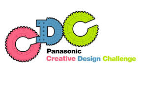
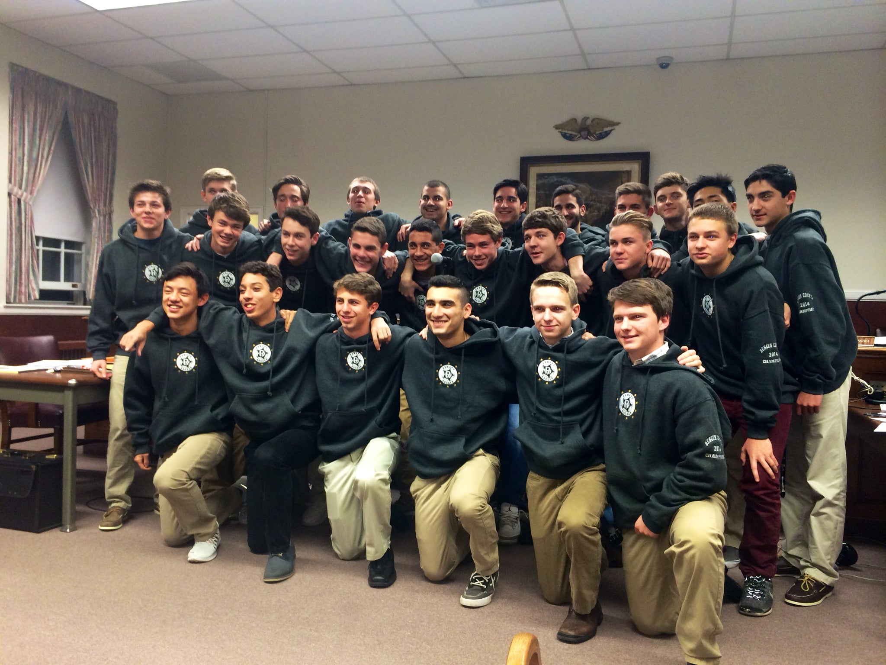

Sigma Pi - Gamma Eta
Executive Board Chairman - Herald
Rutgers University - New Brunswick
Spring 2016 - Fall 2018

Position Definition: Search and Find New Recruits, Acclimate and Lead them through the process of joining our brotherhood, as well as keep the records of Sigma Pi
Goals and Achievements
At my time in the position of Herald I oversaw and managed the implementation of new recruits into the fraternity socially and financially.
Due to my social abilities and outgoing friendly personalty my team (which received recruitment training by me) and I were able to recruit over 40+ new members into the fraternity since I had joined. Personally I believe our success was due to both the friendly personas but also by establishing a new recruitment algorithm I had been working on since I had joined. However that wasn’t my only goal I also worked to increased the retention of joining members by decreasing the joining price and establishing a new system to build brotherhood amongst new recruits and current brothers. I was also able to learn all the inner workings of the lore behind Sigma Pi , by also being the Ritual Chairman, due to this position my loyalty to the organization grew immensely and I wear our badge with honor and dignity. Finally I also upheld all of our records, with me at the helm, by decreasing the price of the annual composite I was also to save the fraternity $3000 which benefitted to our retention rates greatly.Relation To My Passion
My work with the organization Sigma Pi - Gamma Eta allowed me to gain experience with the more abstract implementation of algorithms and taught me that programming isn’t simply typing into a compiler but a way of thinking, and that optimization of these algorithms is applicable in all walks of life. As an executive board member ranking the fifth highest position, my task was to oversee the implementation of new recruits into the fraternity both socially and financially. In my time at the position I gained experience in the abstract method of applying programming ideologies to real life scenarios, and through my effort I was able to increase the fraternity's size by 40+ members as well as increase the retention rate of members from 45% when I was awarded the position to 90% when I had left the position. The skills in implementation and abstract out of the box thinking have prepared me to enter the field of software engineering and I plan to apply these skills where I go.
Mathematics,Physics, and Programming Tutor
Tutor/Mentor
Rutgers University - New Brunswick
Fall 2016 - Spring 2020

Position Definition: Freelance Tutor in Algebra 1, Algebra 2, Geometry, Precalculus, Calculus 1, Calculus 2, Calculus 3, Physics 1 (Kinematics, Energy, Momentum),Physics 2 (Electricty and Magnetism), OOP (Java,C++,Python), Data Structures and Algorithms (Java)
Quotes From Former Students
I first met Keeyan during finals week of fall semester when he was tutoring a kid in my calculus class. After failing the course, I reached out to Keeyan to see if he could tutor me. When we first started our tutoring sessions, I was really nervous about what he would think of me because I failed a course that was second nature to him. My self esteem was low because of how I performed academically the semester before and I wasn’t very confident that I could do well in it if I tried again. Nonetheless, Keeyan was determined in helping me succeed. We met two to three times a week and he gave me some problems to do on my own. Our sessions consisted of going through the sections and explaining the concepts. If there was something I didn’t quite understand he would use things that I could relate to to help me visualize the particular concept. Overall I had a very good experience with being tutored by Keeyan. He never once made me feel inferior when it came to learning and because of that I felt comfortable enough to ask questions and say when I didn’t understand something. He helped me identify my mistakes and taught me how to fix them as well as how to study and take the exams.With Keeyans help, I was able to not only pass calculus, but exceed my expectations in how well I could do. I ended the class with a grade that was four letter grades higher than what I originally got. I was a completely different student by the time I ended spring semester and I owe it all to Keeyan.
~ Michelle
Relation To My Passion
My father told me before I came to school something that has always resonated with me, teach what you love. Since I was young my father sat me down and Sat me down and taught me the ins and outs of mathematics. From elementary addition to advanced calculus we would sit and discuss concepts, do problems together, and solve puzzles. One day I asked him how he knew so much about mathematics, he told me that he used to tutor people while he completed his undergrad and he owes all his mastery of mathematics to teaching. I fully subscribe to the idea that if you can teach then you fully understand it. Therefore I have always gone out of my way to teach the things that I want to master, I have found that not only am I helping my peers excel, but I am also excelling myself because as I work through problems and find new and creative ways to describe abstract concepts to someone I too am solidifying my expertise on the subject. I will never turn down a peer looking for guidance and I will always take the time to sit down with them to see if they can master the subject. I find that everyone is teachable however it takes the right teacher and the right delivery to do so.
Panasonic Creative Design Challenge
Presentation Lead, Design Engineer
NJIT - Newark
September 2015 - May 2016
Challenge Definition: The Panasonic Creative Design Challenge is a premier science and technology competition where teams of New Jersey high school students put their engineering and technical skills to the test.
Goals and Achievements
The challenge itself was another design project I was in but this was when I was younger and was my first real introduction into engineering thought process.
Between the three team members I rose to the position as leader simply because I tend to just be the person people to look to for answers.
With me at the helm we drafted and finalized designs for 9 months for the project
I was also presentation lead, presenting our 9 month design project to three Panasonic executives and 2 Panasonic engineers.
With our work as a waterfall approach I was able to coordinate my team to meet all the deadlines accordingly.
The ending result was, an engineering log book that detailed our daily progress over the 9 month design period, a 30 minute presentation to which we placed second, a functioning robotic arm that function to simulate a radioactive spill cleanup operation, a report detailing our progress and approach, as well as placing 5th out of 100 teams in the competition.
Links To Work/Challenge Page
Link To be Put In
Unsung Hero Award Winner: Leadership Award
Ramapo Varsity Soccer Captain/Club & Academy Level Team Captain

Award: Bergen County Coaches Association Unsung Hero Award
Award Description
He comes to play every game. He might be a starter and a steadying force on the field…or he might be a substitute off the bench to add a calculated and needed energy boost. He may not get stats or his name in the paper, but coaches and teammates know what an important contributor he is.
He will do the dirty work—like marking an opponent or sacrificing his body to make a play. Gritty. Team before self. He is a player who consistently steps it up.
Reliable.
An Unsung Hero has a passion for the game. He has an uncanny nose for the ball. He always seems to be in the right place at the right time. He has a knack for making his teammates better. He works hard to improve himself and his teammates. He often has the biggest heart and the will to win. Plays tough—plays hurt.
Resilient.
He wears his emotion on his sleeve.
An Unsung Hero makes his mark every day of the season. He sets the example by practicing hard. He’s coachable. He can be counted on to do the little things. He grabs the med kit and water—without being asked to do so. Good role model and mentor to young teammates. He has a good sense of humor to keep everyone loose.
An Unsung Hero is a special player coaches hate to lose to graduation. A player coaches would love to clone. A player whose name brings a smile to his coach’s face a couple of years after he graduates.
An Unsung Hero often does not get the attention or the accolades. Coaches come to “expect” their Unsung Hero to do the right thing.
Personal Statement
Since I was a child I had been playing soccer. I had the pleasure of going from regular youth recreational league all the way to collegiate leagues and boy, was it a journey. Starting at a young age I watched myself progress, and slowly realized the power of practice, dedication, and putting your nose to the grindstone. I suppose it was soccer that brought out my natural ability to lead, because which ever team I had ever been to, I had always eventually rose to the position of captain. I was honored with this award my senior year after helming the captain position on my varsity high school soccer team. As a four year veteran I was honored and humbled by the speeches the association gave me. To this day the thought of people thinking so highly of me on the pitch bring tears to my eyes. Since I was given the award and made aware of the attributes I brought to the team, I have worked hard to be the personification of those traits in all walks of life. I will continue to do so both on and off the pitch. Soccer will always have my heart and I will work my best to continue my passion for the game throughout my life.